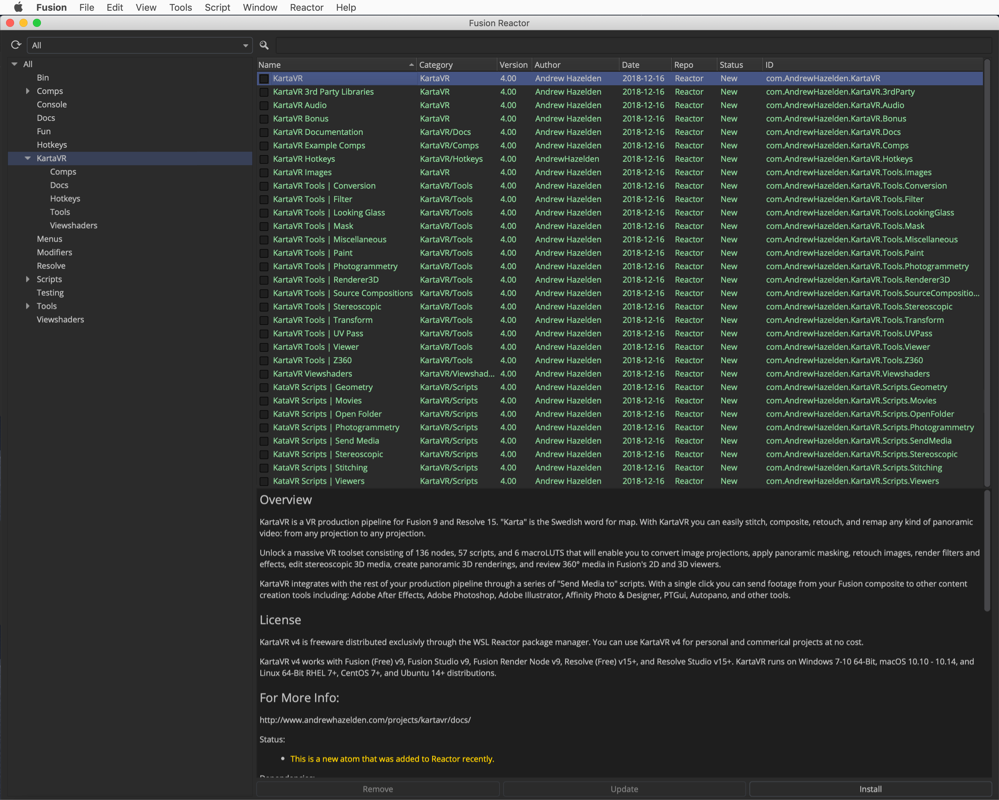
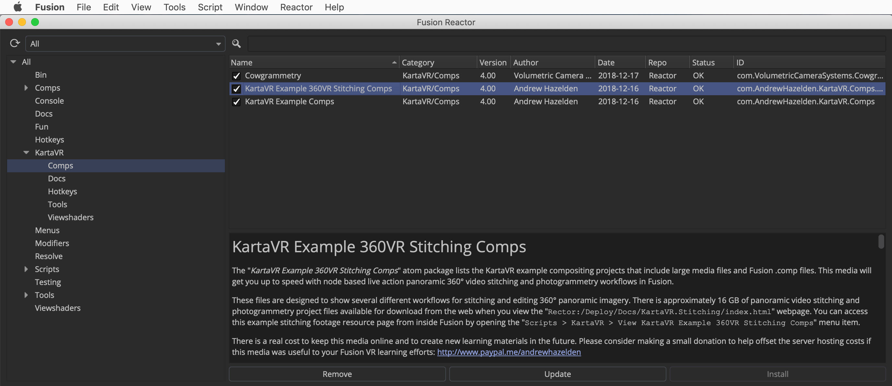

Version 4.0 - Released 2018-12-18
by Andrew Hazelden
Email: andrew@andrewhazelden.com
Web: www.andrewhazelden.com

As a small 🎄 Christmas timed gift to the "Steak Underwater" Fusion community, a new "KartaVR v4" release has been prepared as a free WSL Reactor package manager based install. KartaVR v4 is freeware distributed exclusively through the Steak Underwater user community platform. KartaVR v4 can be used on personal and commerical projects at no cost. KartaVR can legally be installed, for free, on an unlimited number of computers and render nodes via the Reactor package manager.
The commercial paid version of KartaVR was discontinued and withdrawn from the market when at SIGGRAPH 2017 Blackmagic Design released Fusion 9 with an integrated VR toolset as a free update for all Fusion (Free) and Fusion Studio users. It's more than 500 days since that point in 2017 when Fu 9 VR came out, and BMD has not come back to fix any of the deep issues that users have brought up for months with Fusion 9 and now Resolve 15's initial VR tool offerings. 🙄 Issues such as a flawed (IMO 100% broken) omni-stereo 360°rendering system, no fulldome rendering tools, a lack of any mono or stereo 3D based fisheye image processing nodes, and a general lack of stitching tools to help people finish live-action based immersive VR content creation inside of Fusion.
The KartaVR for Reactor atom package dramatically improves the panoramic 360° compositing toolset available to Fusion (Free) and Fusion Studio based artists who want to create their own immersive content. And with the WSL Reactor package manager, you can now do a KartaVR install without even leaving Fusion. 😀
KartaVR v9 works with Fusion (Free) v9, Fusion Studio v9, Fusion Render Node v9, Resolve (Free) v15+, and Resolve Studio v15+. KartaVR runs on Windows 7-10 64-Bit, macOS 10.10 - 10.14, and Linux 64-Bit RHEL 7+, CentOS 7+, and Ubuntu 14+ distributions.
KartaVR technical support is available through the "Steak Underwater" user community:
https://www.steakunderwater.com/wesuckless/index.php
KartaVR Example 360VR Stitching Comps:
http://www.andrewhazelden.com/projects/kartavr/examples/

KartaVR is (C) Copyright Andrew Hazelden 2014-2018. All rights reserved.
"Karta" is the Swedish word for map. With KartaVR you can easily stitch, composite, retouch, and remap any kind of panoramic video: from any projection to any projection. The KartaVR plug-in works inside of Blackmagic Design's powerful node based Fusion Standalone 9 and Resolve 15 software. KartaVR provides the essential tools for VR, panoramic 360° video stitching, and image editing workflows.

Unlock a massive VR toolset consisting of 136 nodes, 57 scripts, and 6 macroLUTS that will enable you to convert image projections, apply panoramic masking, retouch images, render filters and effects, edit stereoscopic 3D media, create panoramic 3D renderings, and review 360° media in Fusion's 2D and 3D viewers.
KartaVR integrates with the rest of your production pipeline through a series of "Send Media to" scripts. With a single click you can send footage from your Fusion composite to other content creation tools including: Adobe After Effects, Adobe Photoshop, Adobe Illustrator, Affinity Photo & Designer, PTGui, Autopano, and other tools.

The KartaVR plug-in makes it a breeze to create content for use with virtual reality HMDs (head mounted displays) like the Oculus Rift, Samsung Gear VR, HTC VIVE, and Google Cardboard. The toolset can also output "Domemaster" formatted imagery for exhibition in immersive fulldome theatres.
With KartaVR you can remap 360° media between LatLong, cylindrical, angular fisheye, domemaster, and countless cubic formats like the popular GearVR and Horizontal Cross layouts.

KartaVR was formerly known as the "Domemaster Fusion Macros". With the release of KartaVR 3 the entire toolset has been revised and now meets the challenging needs of VR, 360° Spherical video, and theatrical fulldome production.
Steak Underwater "Reactor" package manager suppport was added, along with new full-featured KartaVR freeware license that allows commercial use of the VR tools for $0.
Looking Glass Display based lightfield rendering support.
macOS based users of KartaVR can run the new "Video Snapshot" tool that allows Fusion to capture live action footage from HDMI/SDI/USB video sources to a disk. This video captured media is accessed inside of Fusion using a loader node that can be added to the foreground comp in a single click. The video snapshot tool could be used for stop motion animation work. Or a VFX supervisor could use it to grab footage from a video camera to help with on-set production comp-viz work. Or an XR media producer could do a fast node based 360VR stitching test in Fusion to make sure the footage being captured on location is going to be able to be fine-stitched in post without any show-stooping issues.

KartaVR now has a collection of panoramic 360° depthmap data compatible "Z360" nodes that allow you to create 6DOF stereo VR output inside of Fusion. As part of this new 6DOF workflow, KartaVR also supports using Fusion Studio's "Disparity" node with the Z360 toolset to extract depth information from your live action camera rig footage.
The Z360VRDolly node allows you to animate omni-directional stereo compatible XYZ rotation and translation effects inside of an equirectangular 360°x180° panoramic image projection. This means you can now create slider dolly like motions in post-production from your stereo imagery.
The Z360Stereo node makes it easy to convert over/under formatted color and depthmap data into a pair of new left and right stereo camera views.
The Z360Mesh3D node takes the color + depthmap image data and creates a new displaced environment sphere that allows you to explore a simulated real-time volumetric VR version of the scene in Fusion's 3D workspace. Since the Z360Mesh3D node creates real geometry in the scene that updates per frame you are able to easily move around with full XYZ rotation and translation controls. With this approach you can also place Fusion based Alembic/FBX/OBJ meshes inside the same 3D scene, or add photogrammetry generated elements, too.
The Z360DepthBlur node allows you to apply depth of field lens blurring effects to your panoramic imagery based upon the Z360 based depthmap data.
You can now render omni-directional stereo output in KartaVR when the Z360Renderer3D and Z360Stereo nodes are used together.
KartaVR has a new Send Media to Photoscan script that helps people who are working with photogrammetry (image based modelling) workflows. This script instantly creates an AGI Photoscan project file out of your selected Fusion based loader/saver imagery. This makes for a really efficient pipeline that allows you to key your greenscreen shot photogrammetry footage using Primatte in Fusion and then process the footage in AGI Photoscan with geometry based alpha masking.
There is an accompanying Send Media to Photoscan YouTube video tutorial that shows the new toolset in action using studio shot footage.

A pair of nodes called ImageGridCreator and ImageGridExtractor help create/extract image sequences from a tiled image grid layout. This is handy if you are working with photogrammetry or lightfield source imagery that might be coming from a combined "sprite atlas" style image grid layout.

Dig into the Example Projects
KartaVR now includes 64 Fusion example projects. Each one contains detailed descriptions of a panoramic compositing workflow. Explore the projects and learn new techniques that will take your VR project to the next level. There is also a fun roller coaster example that demonstrates how to render VR content directly in Fusion's 3D animation environment.
Oculus Rift Support in Fusion
An Oculus Rift stereo rendering camera provides the ability to view Fusion composites directly on Oculus Rift DK1 and DK2 head mounted displays. This feature works on Windows, Linux, and macOS systems that support HDMI video output. The Oculus Rift head tracking module is not supported, but manual navigation controls in Fusion can be used to interactively adjust the camera's point of view.

Import PTGui Project Files
You can now import a PTGui stitching project file into Fusion. This will make a new composite with all of the nodes required to stitch your footage in seconds.
UV Pass Based High Speed Panoramic Conversions
KartaVR is able to dramatically simplify the process of building a fast and high quality UV pass based panoramic 360° video stitch. This UV Pass technique allows you to stitch and remap imagery between any image projection imaginable.
KartaVR is compatible with Fusion (Free) and Fusion Studio 9.0.2, and Resolve (Free) and Resolve Studio 15.2+. KartaVR runs on Windows 7-10 64-Bit, macOS 10.10 - 10.14, and Linux 64-Bit RHEL 7+, CentOS 7+, Ubuntu 14+ distributions.


The PanoView script allows you to click on any node in Fusion and quickly send your immersive 360° media to an Oculus Rift head mounted display or external media playback program:
The "Publish Media to Google Cardboard VR View" script lets you customize the settings and generate a Google Cardboard VR View webpage that can be viewed locally or pushed via Apache web sharing and WiFi to a smartphone with a Google Cardboard HMD.